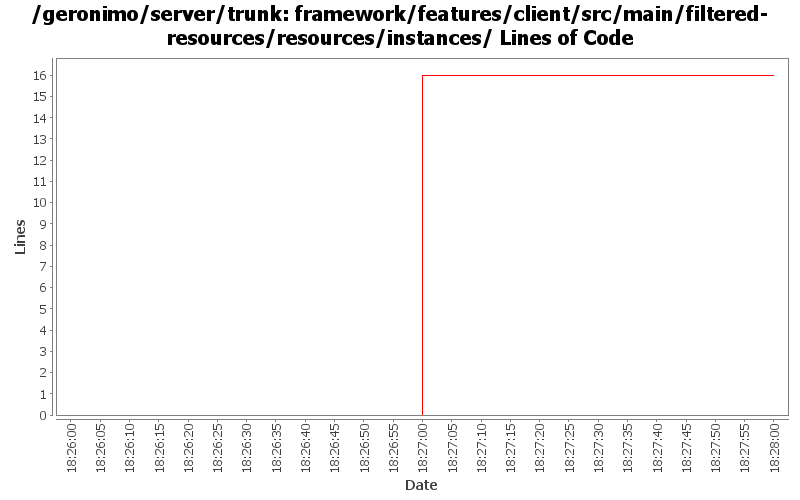

[root]/framework/features/client/src/main/filtered-resources/resources/instances
 client
(0 files, 0 lines)
client
(0 files, 0 lines)
 etc
(20 files, 2038 lines)
etc
(20 files, 2038 lines)
 var
(0 files, 0 lines)
var
(0 files, 0 lines)
 config
(10 files, 863 lines)
config
(10 files, 863 lines)
 security
(4 files, 82 lines)
security
(4 files, 82 lines)
 keystores
(1 files, 20 lines)
keystores
(1 files, 20 lines)

| Author | Changes | Lines of Code | Lines per Change |
|---|---|---|---|
| djencks | 1 (100.0%) | 16 (100.0%) | 16.0 |
GERONIMO-6263 start on app client as karaf instance
16 lines of code changed in 1 file: